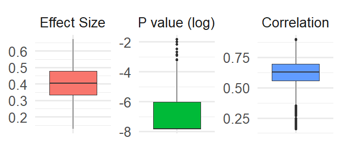

joinmeta - controlling the type-1 error in multiverse meta-analysis
Filippo Gambarota 1
@fgambarota
filippo.gambarota@unipd.it
Anna Vesely2 Livio Finos3 Gianmarco Altoè1
1 Department of Developmental and Social Psychology, University of Padova
2 Institute for Statistics, University of Bremen
3 Department of Statistics, University of Padova
The Multiverse problem

As example, we used the dataset by Daros et al. (2021) with a multivariate meta-analysis of RCTs designs with multiple measure for the same outcome. We considered a total of 162 plausible scenarios.
The Proposed Workflow

We simulated a plausible multiverse sampling from a multivariate normal distribution with a vector of means (i.e., the meta-analysis results) and a variance-covariance matrix for the relationship between different scenarios.
Multiverse Summary
The multiverse is a associated with an overall p-value \(< 0.001\), an average effect of \(0.403\) (\(SD = 0.112\)) and an average correlation of \(0.620\) (\(SD = 0.102\)).


Multiverse post-hoc p-values

Conclusions and Next Steps
- Corrected p-values for valid post-hoc inference on specific scenarios
- The method control the Family-wise Error Rate (FWER) across the multiverse
- Fast meta-analysis via permutations using the
flippackage - Implementing multilevel and multivariate meta-analysis